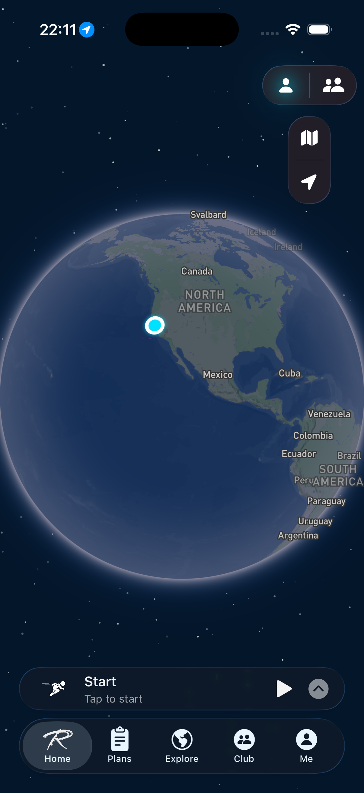
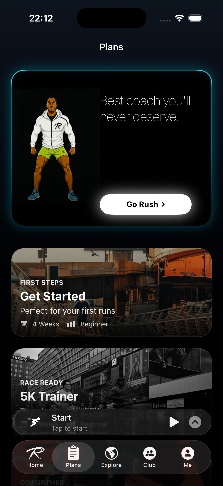
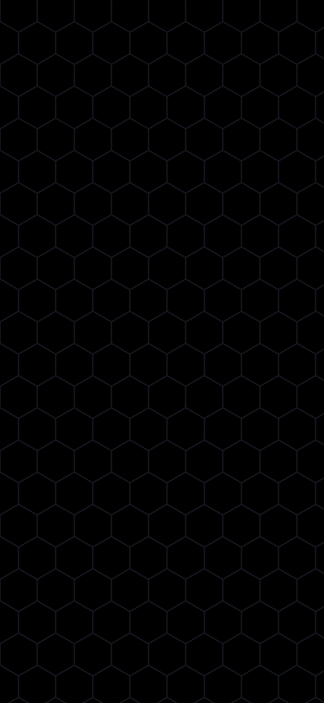

Clubs and a feed worth reading
Join a club, post the run, comment on someone else's. The social feed is built around activities, so there is always something on the map behind the picture.
RouteRush for iOS000 / 120
Start a run or a ride. RouteRush follows your line at street resolution, and keeps recording when the signal drops out.
Every hex your route touches turns yours. Resolution‑11 cells, roughly 25 metres across, claimed the moment you pass through one.
Territory becomes Rush Points, Rush Points become rank, and rank resets every week. The map is only yours while you keep running.
The difference
The same run, scored differently. Distance and pace are the receipt. The map is the score — a permanent record of the streets you have actually covered, cell by cell, against everyone else covering theirs.
Hex conquest
Your GPS line is matched to a hexagonal grid the moment it is recorded. Pass through a cell and it is yours. Come back a different way and the shape of what you own changes.
Cell-level scoring. Rush Points are awarded per activity from the ground you actually covered, not from a step count.
Contested ground. Cells have a dominance record. Someone else running your route puts your claim under pressure.
It compounds. Territory carries between runs, so a neighbourhood is something you build over months.

Boldi, the in-run coach
Boldi watches the run as it happens — your pace, the cells ahead, how much you have left — and says something when it is worth saying. The rest of the time he is quiet.
Timed to the effort. Prompts arrive at splits and decision points, not on a fixed timer.
Aware of the map. He knows which cells are still unclaimed on the route in front of you.

Elapsed
32:14
Nine unclaimed cells on the loop ahead. Hold this pace and they are all yours.
Live Activity & widget
Time, distance and pace stay on the Lock Screen and in the Dynamic Island, and stay interactive — pause and resume without unlocking. Starting is one tap from the Home Screen.
Home Screen widget. One tap opens straight into a tracked run.
Cohort leagues
Every week you are placed in a cohort of thirty at your tier. The top fifth is promoted, the bottom fifth is relegated, and everyone starts again on Monday. Bronze, Silver and Gold, each with three divisions.
New to a tier? A newbie shield covers your first week, so a bad one cannot send you straight back down.
Promotion zone · top 5
· · ·
· · ·
Relegation zone · bottom 5
Captured on iPhone, running the shipping build.

No roadmap items. These are in the app today.
Join a club, post the run, comment on someone else's. The social feed is built around activities, so there is always something on the map behind the picture.
Pick someone, pick a metric, set the window. The VS card tracks both of you until it closes.
Steps, weight and heart rate read in. Workouts written back out.
Premium accounts carry a checkmark across the feed, clubs and leaderboards.
Tracking survives no signal. Activities queue on device and sync when the network returns.

RouteRush is free to start. iPhone, iOS 17 or later. Your first run claims its first cell about twenty seconds in.